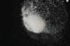

|
|
(For further information on spectroscopy, see:
http://speclab.cr.usgs.gov)
TITLE: Coquimbite GDS22 DESCRIPT
DOCUMENTATION_FORMAT: MINERAL
SAMPLE_ID: GDS22
MINERAL_TYPE: Sulfate
MINERAL: Coquimbite
FORMULA: (Fe+3)2(SO4)3*9H2O
FORMULA_HTML: Fe2+3(SO4)3•9H2O
COLLECTION_LOCALITY: MIT Collection (Harvard Dana Collection)
ORIGINAL_DONOR: MIT Mineral Collection, Dave Sherman
CURRENT_SAMPLE_LOCATION: USGS Denver Spectroscopy Laboratory
ULTIMATE_SAMPLE_LOCATION: USGS Denver Spectroscopy Laboratory
SAMPLE_DESCRIPTION:
Dimorphous with Paracoquimbite.
IMAGE_OF_SAMPLE:

END_SAMPLE_DESCRIPTION.
XRD_ANALYSIS:
40 kV - 30 mA, 7.3-9.5 keV
File: coqum22_mdi, *.out (smear mount on quartz plate)
References: JCPDS #6-40, 27-254
Found: Coquimbite and subequal paracoquimbite
Comment: Very sharp reflections, many peaks slightly asymmetric due to imperfect overlap of reflections. Suggest that these phases are well crystallized and compositionally homogeneous. Weak unindexed reflections are present but, because we find virtually all of the reflections listed on the JCPDS cards, we suspect that the unindexed reflections are coquimbite and paracoquimbite reflections that were not recorded by the JCPDS.
J.S. Huebner, J. Pickrell, and T. Schaefer, 1994, written
communication.
END_XRD_ANALYSIS.
COMPOSITIONAL_ANALYSIS_TYPE: None # XRF, EM(WDS), ICP(Trace), WChem
COMPOSITION_TRACE: None
COMPOSITION_DISCUSSION:
END_COMPOSITION_DISCUSSION.
MICROSCOPIC_EXAMINATION:
END_MICROSCOPIC_EXAMINATION.
SPECTROSCOPIC_DISCUSSION:
END_SPECTROSCOPIC_DISCUSSION.
SPECTRAL_PURITY: 1c2_3_4_ # 1= 0.2-3, 2= 1.5-6, 3= 6-25, 4= 20-150 microns
| LIB_SPECTRA_HED: | where | Wave Range | Av_Rs_Pwr | Comment |
|---|---|---|---|---|
| LIB_SPECTRA: | splib04a r 1249 | 0.2-3.0µm | 200 | g.s.= |
| LIB_SPECTRA: | splib05a r 2213 | 0.2-3.0µm | 200 | g.s.= |
| LIB_SPECTRA: | splib06a r 6341 | g.s.= |
{kind=link}